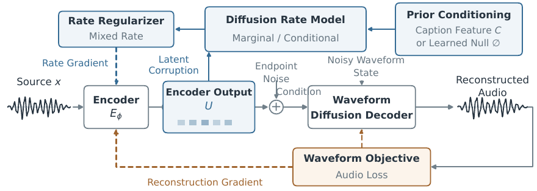

AuDiAE:Learning Audio Latents by Coupling Diffusion Priors and Decoders
AuDiAE couples learned diffusion rate models with a generative waveform decoder to learn compact audio latents. Marginal and text-conditional rate objectives balance retained audio detail with information predictable from text.
Method overview

01 Audio reconstruction
Sound and music reconstructions.
Playback volume is shared. Reconstruction levels are preserved; only one recording plays at a time.
02 Text-to-audio generation
Sound — AudioCaps
DiT latent generator · 24 sampling steps · CFG 5 · 10 s
03 Results
Results reported in the paper.